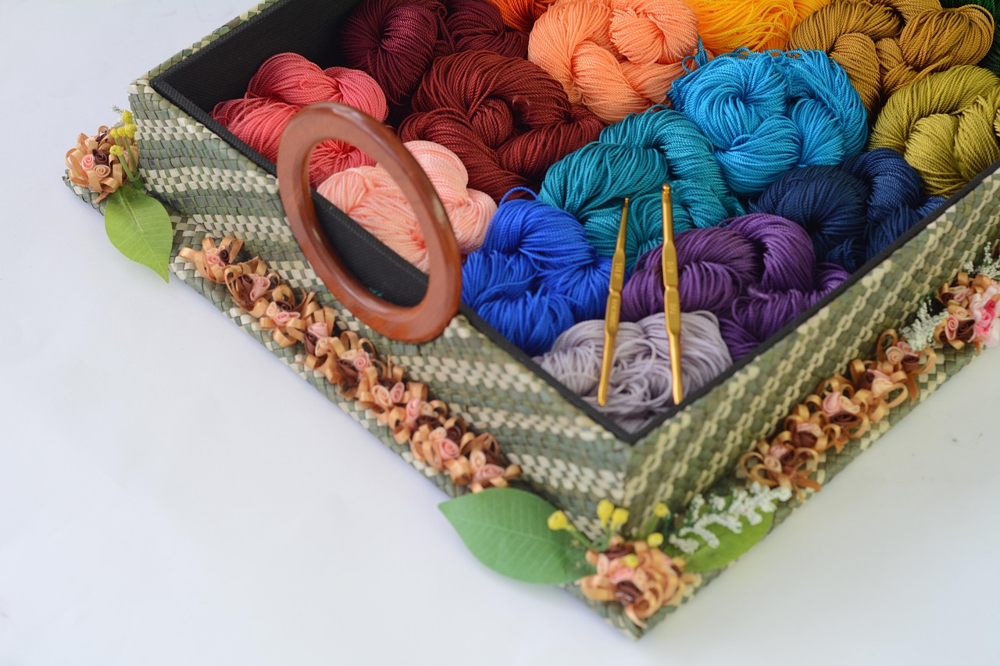
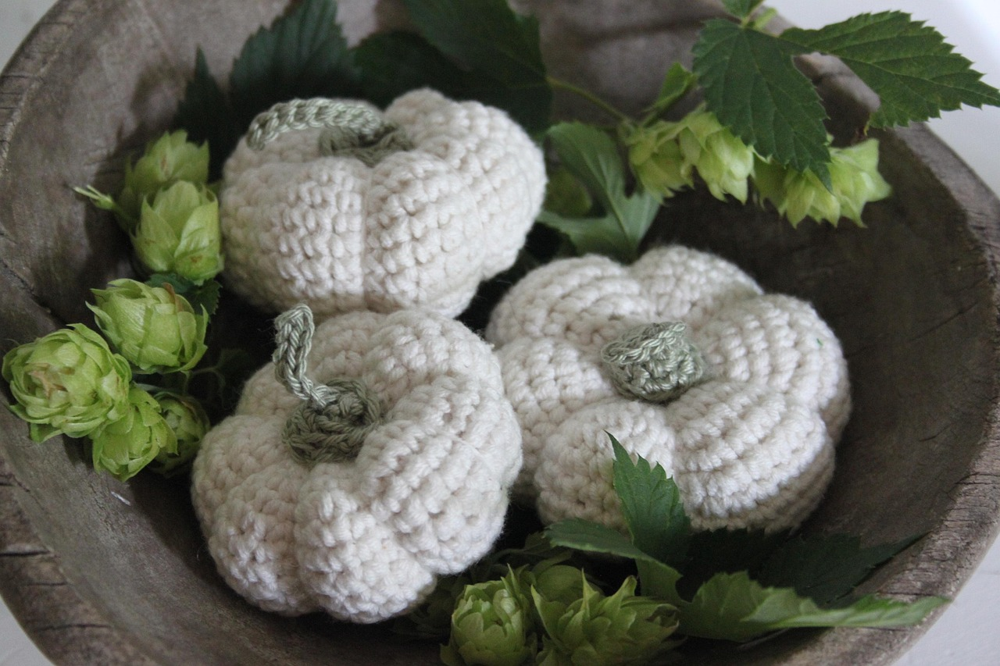

Estimate the amount of yarn needed for your crochet project.
*This calculator provides an estimation. Actual yarn usage can vary based on individual tension, specific yarn brands, and pattern intricacies. Always buy slightly more yarn than estimated.
Crochet Yarn Calculator
Getting started
So you're thinking about giving crochet a try? Awesome! Look no further for a guide to find the perfect beginner pattern and all of the supplies you'll need. We will even tell you where you can find them! We hope you enjoy this wonderful hobby! Time for you to get hooked on crochet!
Required Crochet Supplies
Crochet Hooks
Description: The primary tool for creating stitches. Available in various materials and sizes (mm, US letters, UK numbers).
Purpose: Forms loops to build crochet fabric.
Yarn
Description: The material used for crocheting. Comes in different fibers (e.g., acrylic, cotton, wool) and weights (thicknesses, e.g., Worsted, DK).
Purpose: The fundamental material that forms your project.
Scissors
Description: Any sharp pair for cutting yarn.
Purpose: Trimming yarn tails and fastening off.
Yarn Needle (Tapestry Needle)
Description: A blunt-tipped needle with a large eye.
Purpose: Weaving in yarn ends and seaming pieces.
Crochet Supply Stores
Michaels
Website: https://www.michaels.com/Hobby Lobby
Website: https://www.hobbylobby.com/Walmart
Website: https://www.walmart.com/LoveCrafts
Website: https://www.lovecrafts.com/WEBS - America's Yarn Store (yarn.com)
Website: https://www.yarn.com/Crochet.com:
Website: https://www.crochet.com/Yarnspirations
Website: https://www.yarnspirations.com/Herrschners
Website: https://herrschners.com/Browse through these Crochet Patterns
Find your next project inspiration here!